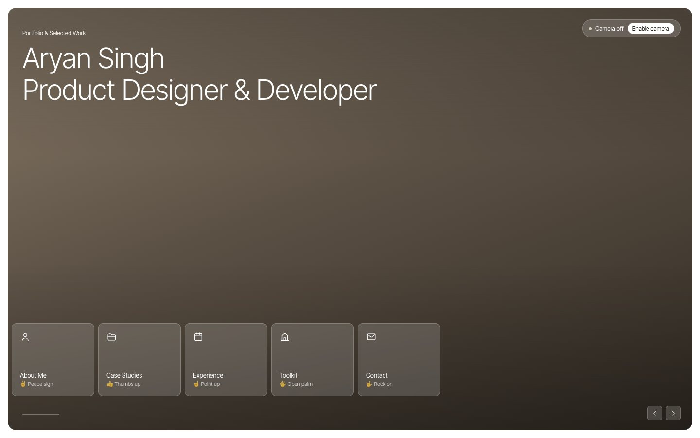

ProblemWhy it matters
Most websites assume a mouse and a steady hand.
I wanted navigation that works with whatever input someone has.
Final productHow it works
Gesture, click or keyboard. All equal.
✌️About
👍Case studies
☝️Experience
🖐️Toolkit
🤟Contact
🤏Click / scroll
✊Close


Shown with the camera off.
Decision 01Access
Never the only way in.
Every card opens by gesture, click or arrow key. It works with the camera off and respects reduced motion.
Instead ofGestures as the only input

Decision 02Tolerance
Forgiving of unsteady hands.
A pose must be held 0.65s, and a pinch needs a clear open and close. Tremors and passing hands trigger nothing.
Instead ofActing on the first frame
Decision 03Feedback
Always show what's happening.
A bar fills while you hold, a cursor follows your hand, and labels show every gesture.
Instead ofHidden timing
ImpactResults
3ways in
0servers, all in-browser
2–4 fpsis enough to work
Obstacle: it first failed on slower laptops. I fixed the timing so it runs on modest hardware. Not yet tested with assistive-technology users.